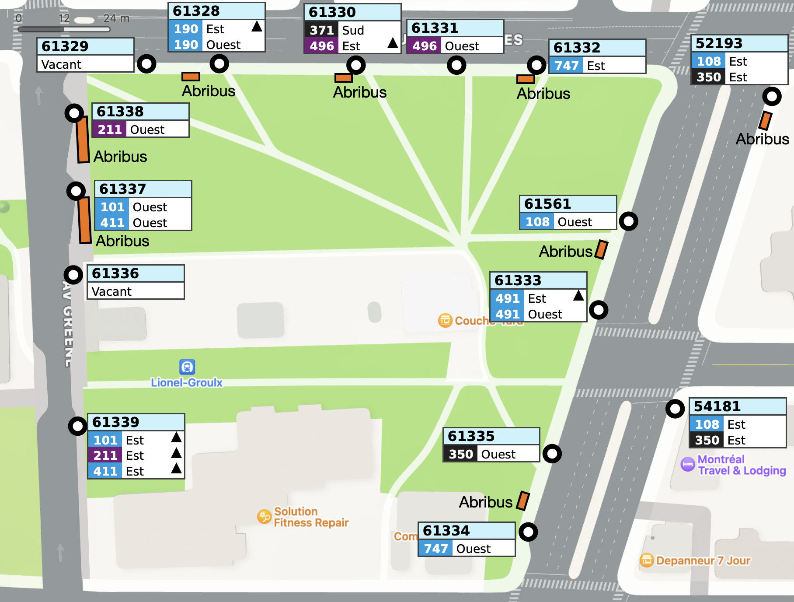
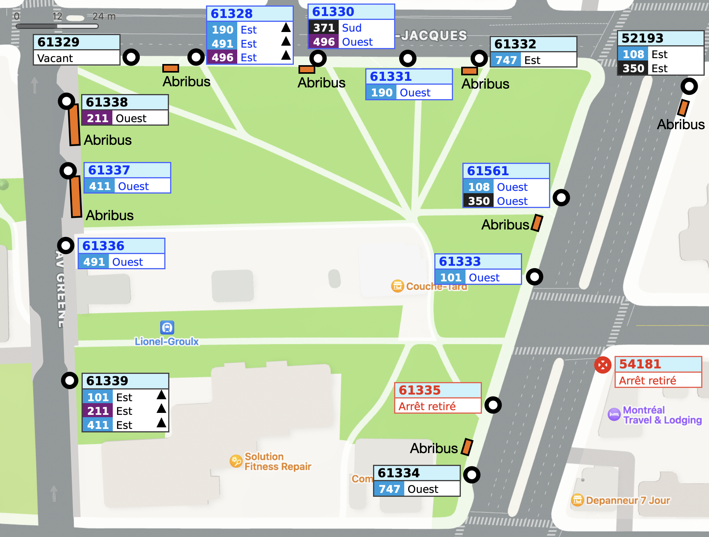

Maintenant, deux refontes ont déjà eu lieu sur les lignes desservant cette station de métro. Avec la refonte de l'Ouest, il y a eu une diminution de nombre de lignes desservant cette station: plusieurs mesures de mitigation liées aux travaux d'Échangeur Turcot (405, 425, 485) ont pris fin. Cependant, l'assignation des quais n'a pas été ajustée en conséquence avec cette refonte. Similairement à d'autres terminus comme Dorval, certaines incohérences demeurent. Ce terminus diffère de Dorval puisque tous les arrêts sont sur rue avec des intersections contrôlées par des feux de circulation, et l'intervention ici se base plutôt sur le chemin pris après la station au lieu de la destination/desserte de la ligne. Le schéma suivant illustre l'assignation actuelle des quais (dès la refonte) :

Comme pour le Terminus Dorval, je catégorise les lignes desservant ce terminus, mais regroupé par le trajet pris une fois quitté la station :
Seule les quais suffisamment à l'ouest sur Saint-Jacques (61330 et à l'ouest) pourront directement tourner sur Atwater dir. nord sans devoir continuer vers l'est et ensuite passer par Vinet. L'utilisation des 3 quais sur Greene est alors privilégiée.
L'assignation actuelle des quais n'est pas optimale. J'énumère les principaux constats :
Puisque la ligne 496 a besoin de l'espace pour permettre le battement et l'embarquement, la ligne 190, était peu fréquente, pourrait continuer sur Saint-Jacques et Vinet pour ensuite continuer son trajet sur Saint-Antoine. Ceci dégagera des places pour les autres lignes plus importantes. Le schéma ci-dessous présente l'assignation des quais suggérée :
